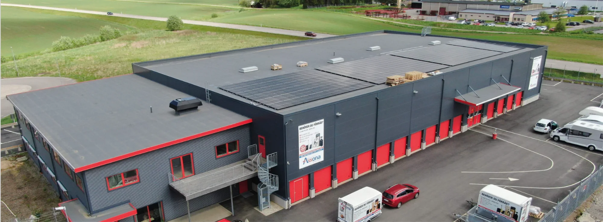
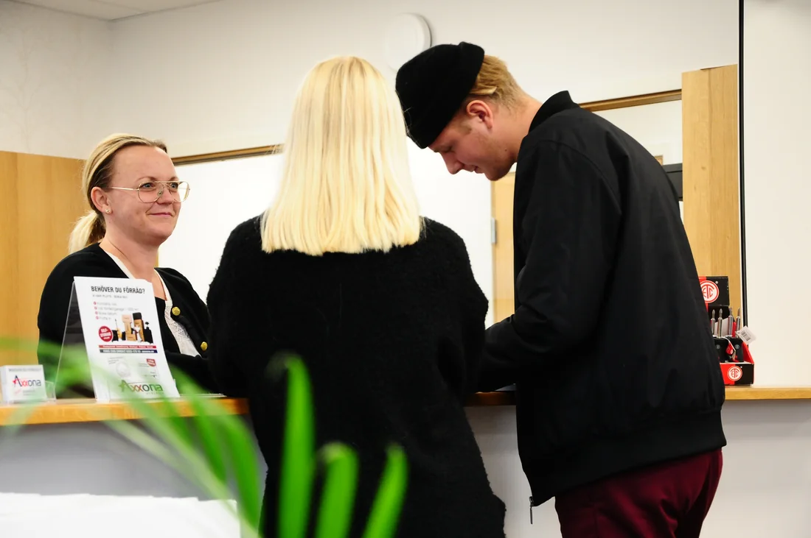

Plats för det
som kommer.
Ett förråd för livet. Ett kontor för idéerna. En lokal att växa i. Hos Axxona finns utrymme för ditt nästa steg.
Mer utrymme, från
525 kr/månFörråd i flera storlekar.
Se storlekar & priserTempererade förråd
Lite mer plats.
Många fler möjligheter.
Hos oss hyr du plats för både det du vill spara och det du vill göra.


 Visualisering. Planerad inflyttning september 2027.
Visualisering. Planerad inflyttning september 2027.Din verksamhet.
Dina kvadratmeter.
24 nya företagslokaler på Ängsvaktaregatan 27. En plats för lager, verkstad eller nästa stora idé – med ytor som kan växa med dig.
Smidigt att kunna gå mellan kontor och lager i bara tofflornaAlexander, StonehouseKundcitat publicerat av Axxona

Här finns plats.
Och människor.
Axxona grundades 2008 av Bengt Stjärnered. I dag hyr vi ut förråd, kontor, fordonsplatser och bostäder, förvaltar fastigheter och arbetar med byggprojekt. Vår bas är Alingsås, med bostäder även i Stenungsund.
När du kontaktar oss får du hjälp att hitta ett utrymme som passar det du faktiskt behöver. Du är välkommen att prata med Peter om storlek, hyrestid och vilka alternativ som finns just nu.